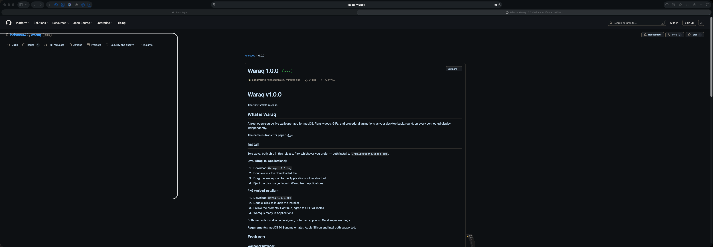
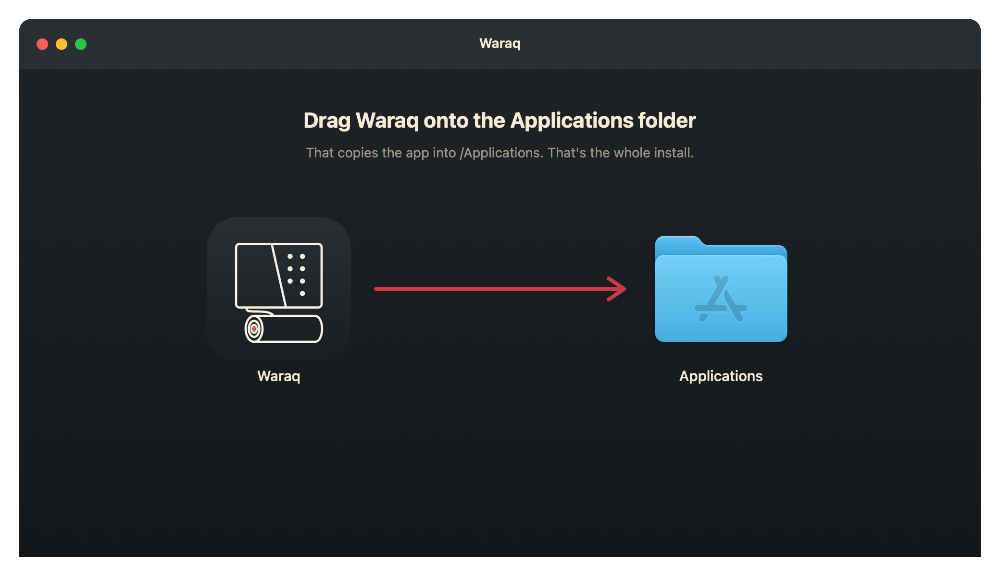
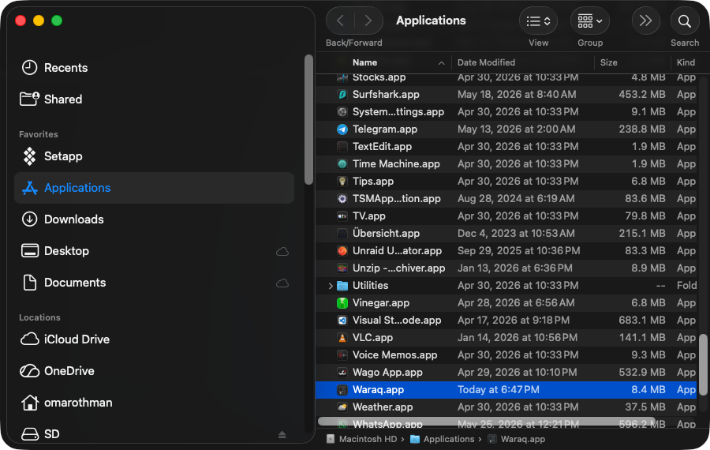
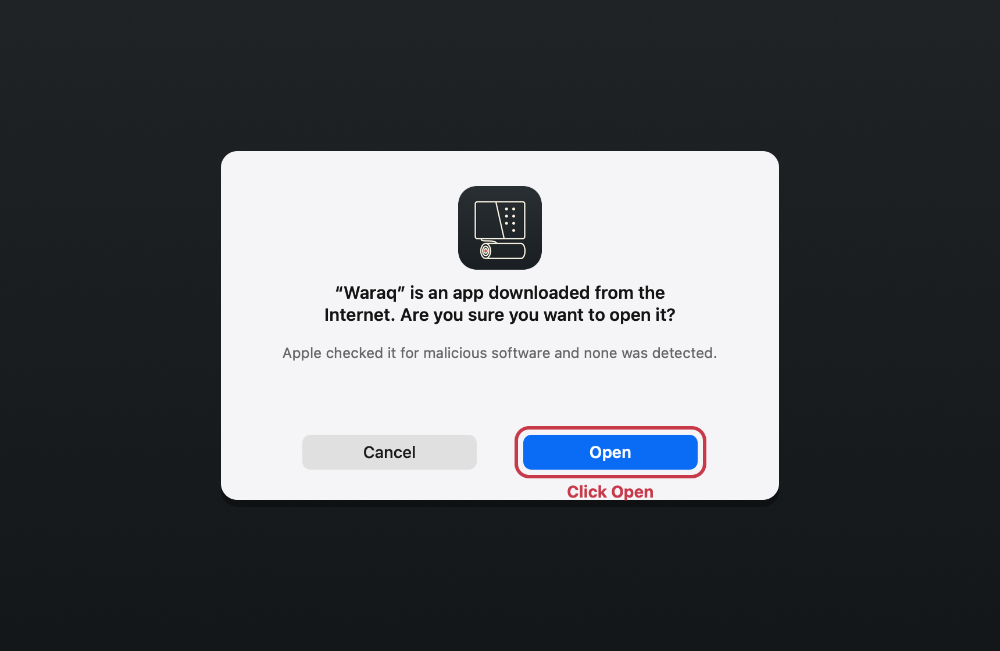
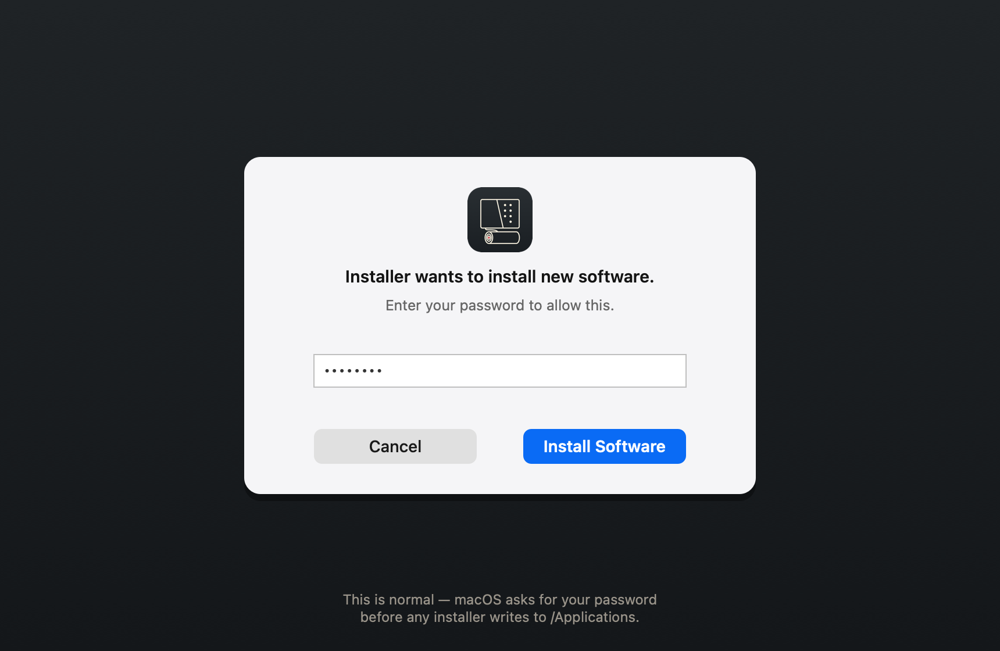
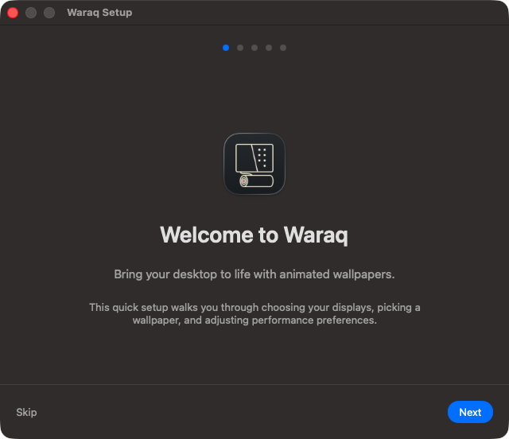
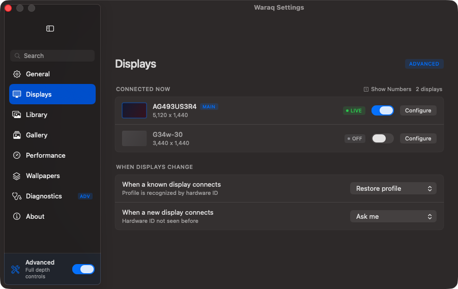

Get live wallpapers running on your Mac in under a minute.
Download Waraq 1.0.0 DMG · macOS 14+ · 2.3 MB · Signed & notarized Or download the .pkg guided installer →Free and open source. GPL v3. No account, no tracking, no catch.
Both options end with Waraq running in your Applications folder. Pick whichever feels easier — the DMG is the classic Mac drag-and-drop, the PKG walks you through it.
Click the big download button at the top of this page, or grab it from the v1.0.0 release page. The file is named Waraq-1.0.0.dmg and lands in your Downloads folder.

Double-click Waraq-1.0.0.dmg in Downloads. A small window opens showing two things: the Waraq app, and a shortcut to your Applications folder.
Click and hold the Waraq icon, drag it onto the Applications shortcut, and let go. macOS copies the app into your Applications folder. That's the entire install.

Close the window, then eject the "Waraq" disk — right-click it on your desktop (or in the Finder sidebar) and choose Eject. This is just tidying up; the app is already copied.
Open Finder → Applications, and double-click Waraq. Because the app is signed and notarized by Apple, it just launches — no scary warning.


Waraq's wallpaper-roll icon appears in your menu bar (top-right of your screen). The first launch runs a quick setup wizard — displays, a starter wallpaper, performance preferences. You're set.
Grab Waraq-1.0.0.pkg from the v1.0.0 release page, or use the secondary download link in the hero above.
Double-click Waraq-1.0.0.pkg in Downloads. The macOS installer wizard opens on a Welcome screen.
Read the welcome text if you like, then click Continue in the bottom-right.
The next screen shows the GNU General Public License v3. Click Continue, then Agree in the popup.
The installer asks for your Mac login. This is standard for any installer — macOS requires permission to write into the Applications folder.

A progress bar runs, then a success screen appears.
Waraq is now installed in your Applications folder.
Open Applications and double-click Waraq. The menu bar icon appears top-right, and the setup wizard runs on first launch.
Waraq is a menu bar app — no Dock icon. After launching, look in the top-right corner of your screen for the small wallpaper-roll icon. Click it to open Waraq Settings.
On first launch, a short 5-step wizard appears. It helps you pick which displays get animated wallpapers, choose a starter wallpaper, and set performance preferences (like pausing on battery). You can re-run it any time from the About pane.

Each connected display gets its own row — toggle it on, pick a wallpaper, set fit mode, mute, and volume. Profiles save by hardware ID, so swapping monitors never blows away your setup.

If something doesn't work, expand the relevant section.
This shouldn't happen because Waraq is notarized by Apple. If it does, your Mac may have very strict Gatekeeper settings. Open System Settings → Privacy & Security, scroll to the bottom, and click "Open Anyway" next to the Waraq message.
It might be hidden if your menu bar is crowded — macOS tucks overflow icons away. Click the chevron or "…" in your menu bar to reveal hidden items. A tool like Hidden Bar helps manage a busy menu bar.
Open Waraq Settings (click the menu bar icon) and check the Displays pane. Make sure the display you want is toggled ON, and click "Configure" to confirm a wallpaper is selected. If you're on battery, check the Performance pane — Waraq pauses on battery by default; you can turn that off.
Make sure the download finished completely (the size should match the release page). Try a fresh download, ideally from a different browser if the file seems corrupted. Old Waraq DMGs lingering in Downloads can sometimes interfere — remove them and grab a clean copy.
Check the source file's resolution. Anything below your display's resolution gets stretched. For best results use 4K source files on 4K displays. The Gallery sources (Pixabay, Pexels, NASA) all offer HD/4K options — pick a higher resolution.
Open Settings → Performance. Lower the render quality, cap the frame rate, and keep "Pause on battery" enabled. You can also pause wallpapers on specific displays — a secondary monitor doesn't need to render constantly if you're not looking at it.
Click the menu bar icon and choose Quit.
Open Applications, drag Waraq to the Trash, and empty the Trash to fully remove it.
Waraq stores wallpapers and settings in ~/Library/Application Support/Waraq/. Delete that folder to remove every trace. Leaving it does no harm — it just takes a little disk space.